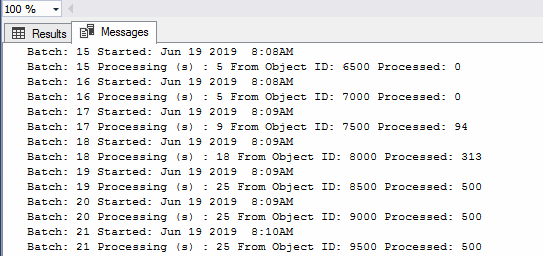

Considerations for large volume vault¶
The demand for managing metadata in large vaults is on the increase. MFSQL Connector can make a difference when the most appropriate tools are selected to deal with different scenarios and applications. This blog aims at providing perspective on the key considerations for large vaults.
The number of objects and the complexity of the metadata design in a specific class is key to define a “large vault” in terms of the use and impact of MFSQL Connector. Anything over 75,000 records should be regarded as large volume and should take these considerations into account.
Running spMFUpdateTable in default mode with no filters will fail with large volumes. The XML files being transferred in the process are simply too large.
There are other options, and the options to use will depend on the use case.
Initialize class table
Update class table with recent changes
Update M-Files from SQL
Validate class table
Initialize class table¶
The first pull or initialization of the class table will take some time. As an example, our benchmark with 545000 records took approx 6 hours to complete. The procedure spmfUpdateTableInBatches must be used.
This procedure may also be used to validate or re-initialise a class table.
Set the @ToObjid parameter to the maximum segment id for the object type. The procedure will update the class table in batches until it reaches the maximum. It is also possible to update specific segments by specifying the @FromObjid and @ToObjid.
The estimated processing time can be calculated : max segment id / 500 * 24 / 60 / 60 = number of hours for update. in this formula the 500 is the fixed size of the batches and the 24 is the average processing time in seconds per batch. The @WithStats parameter will allow you to see the progress of processing in SSMS.
exec spMFUpdateTableinBatches
@MFtableName = 'MFLargeClassTable'
,@UpdateMethod =1
,@WithTableAudit = 1
,@FromObjid = 1
,@ToObjid = 600000
,@WithStats = 1

Update with recent changes¶
Regular update of the class table has two scenarios:
update records where the objid is known
update all records since last change in M-Files
update all changed records including deletions in M-Files.
spMFUpdateTable¶
Using spMFUpdateTable with parameter @Objids referencing the objid or list of objid’s to be update is highly efficient in large volume class table updates.
EXEC [dbo].[spMFUpdateTable] @MFTableName = 'MFLarge_Volume'
,@UpdateMethod = 1
,@ObjIDs = '80184,80313'
spMFUpdateTableWithLastModifiedDate¶
Using spmfUpdateTableWithLastModifiedDate will get all records from M-Files which has changes since the last update of the class table. Use this procedure as the default approach when the objid of the records to be updated is unknown. Records deleted in M-Files is however NOT identified with this procedure.
DECLARE @Return_LastModified DATETIME
,@Update_IDOut INT
,@ProcessBatch_ID1 INT;
EXEC [dbo].[spMFUpdateTableWithLastModifiedDate] @UpdateMethod = 1
,@Return_LastModified = @Return_LastModified OUTPUT
,@TableName = 'MFLarge_Volume'
,@Update_IDOut = @Update_IDOut OUTPUT
,@ProcessBatch_ID = @ProcessBatch_ID1 OUTPUT
,@debug = 0;
GO
Our Benchmark show the update of a single record change in M-Files to class with 545000 records took approx 5 seconds.
spMFUpdateMfilesToSQL¶
Using spMFUpdateMFilesToSQL is very efficient to get changed object versions using spMFTableAudit, and then to update the class table by only processing the changed objects. This elliminates exchanging large datasets between M-Files and SQL to determine which records had changed.
DECLARE @MFLastUpdateDate SMALLDATETIME
,@Update_IDOut INT
,@ProcessBatch_ID INT;
EXEC [dbo].[spMFUpdateMFilesToMFSQL] @MFTableName = 'MFLarge_volume'
,@MFLastUpdateDate = @MFLastUpdateDate OUTPUT
,@UpdateTypeID = 1 -- tinyint
,@Update_IDOut = @Update_IDOut OUTPUT
,@ProcessBatch_ID = @ProcessBatch_ID OUTPUT
,@debug = 0
A single record that has changed takes approx 4 seconds to update in a class table with 545 000 objects.
Update from SQL to M-Files¶
Updating updates from SQL to M-Files with large tables have two considerations.
When update a smallish (a couple of thousand) entries into the large volume table, the standard spMFUpdatTable with @UpdateMethod = 0 can we used. Updating 6 records from SQL to M-Files took 39 seconds in our benchmark.
We recommend to use spMFUpdateTableInBatches with @UpdateMethod = 0 when a large number of records is being updated. This is particularly relevant when say all the records in the class table has been changed in SQL and need updating into M-Files. Updating M-Files from SQL is a particularly slow operation as each record need to be checked out, updated and checked back in. Our benchmarks has shown that it takes approx 75 seconds for each batch of 500 to be update. Updating all 545 000 records took approx 21 hours. The benefit of using the batch update method is that each batch processed can be monitored separately and if something happens, the process can be abandoned and restarted.
Validating class table¶
The class table should always reflect the status of M-Files objects up to the last pull from M-Files. The Connector include procedures that is specifically geared towards validating this is the case.
spMFTableAudit¶
The spMFTableAudit procedure creates a separate table MFAuditHistory of the object version of the class. Executing this procedure will pull all the object versions (objid, version, class, object type) and compare it with the associated class table and flag each objid status.
This procedure can be executed to do a full comparison, or to only pull object versions that changed from a certain date.
DECLARE @SessionIDOut INT
,@NewObjectXml NVARCHAR(MAX)
,@DeletedInSQL INT
,@UpdateRequired BIT
,@OutofSync INT
,@ProcessErrors INT
,@ProcessBatch_ID INT;
DECLARE @MFModifiedDate DATETIME;
SELECT @MFModifiedDate = MAX([mlv].[MF_Last_Modified]) FROM [dbo].[MFLarge_volume] AS [mlv]
SELECT @MFModifiedDate = ISNULL(@MFModifiedDate,'2000-01-01')
EXEC [dbo].[spMFTableAudit] @MFTableName = 'MFLarge_Volume'
,@MFModifiedDate = @MFModifiedDate
,@SessionIDOut = @SessionIDOut OUTPUT
,@NewObjectXml = @NewObjectXml OUTPUT
,@DeletedInSQL = @DeletedInSQL OUTPUT
,@UpdateRequired = @UpdateRequired OUTPUT
,@OutofSync = @OutofSync OUTPUT
,@ProcessErrors = @ProcessErrors OUTPUT
,@ProcessBatch_ID = @ProcessBatch_ID OUTPUT
,@Debug = 0
Use the view MFvwAuditSummary to provide a quick overview of the result
SELECT *
FROM [dbo].[MFvwAuditSummary] AS [mfas]
WHERE [mfas].[TableName] = 'MFLarge_Volume';
spMFGetObjectvers¶
This procedure is used in spMFTableAudit. However, applying it on its own is effective to return objects in the class table that has changed since the last update.
DECLARE @outPutXML NVARCHAR(MAX)
,@ProcessBatch_ID INT;
DECLARE @lastmodified DATETIME
DECLARE @Idoc int
SELECT @lastmodified = MAX([mbs].[MF_Last_Modified]) FROM [dbo].[MFBasic_singleprop] AS [mbs]
EXEC [dbo].[spMFGetObjectvers] @TableName = 'MFlarge_Volume'
,@dtModifiedDate = @lastmodified
,@MFIDs = '550000'
,@outPutXML = @outPutXML OUTPUT
,@ProcessBatch_ID = @ProcessBatch_ID OUTPUT
,@Debug = 0
EXEC [sys].[sp_xml_preparedocument] @Idoc OUTPUT, @outPutXML;
WITH [cte]
AS (SELECT [xmlfile].[objId]
,[xmlfile].[MFVersion]
,[xmlfile].[GUID]
,[xmlfile].[ObjectType_ID]
FROM
OPENXML(@Idoc, '/form/objVers', 1)
WITH
(
[objId] INT './@objectID'
,[MFVersion] INT './@version'
,[GUID] NVARCHAR(100) './@objectGUID'
,[ObjectType_ID] INT './@objectType'
) [xmlfile])
SELECT * FROM cte
EXEC [sys].[sp_xml_removedocument] @Idoc;
Benchmarks with large volume test results.¶
Benchmarks are generated on separate SQL and M-Files servers; SQL 2017 Standard Edition with 8GB memory. The tests where done one after the other and not concurrently. No additional vault applications (such as compliance kit, metadata configuration validation etc) are running.
Operation |
Scenario |
Record count |
Benchmark |
|---|---|---|---|
spMFUpdateTable This procedure should not be used without filters for large volume updates |
No special filters Initialization of table records in M-Files but not in Class Table class table is empty at start |
545640 |
Fails |
spMFUpdateTableInBatches @WithTableAudit = 0 @ToObjid = 550000 |
Initialization table with empty class table and table audit not processed in advance records in M-Files but not in Class Table |
545640 |
all items updated in SQL 6:07:10 Ave 24 sec per batch |
spMFUpdateTableWithLastModifiedDate |
Change one record in M-Files Class table was updated before change |
545640 |
00:00:05 |
spMFUpdateTable @Objids = ‘00184,80143’ |
Change two records in M-Files The latest version of two records are update in SQL |
545640 |
2 records updated 00:00:09 |
spMFUpdateTable @UpdateMethod - 0 |
Changing records in SQL and updating the records into M-Files |
545 636 |
6 records changed 00:00:39 |
spMFUpdateMfilestoSQL @UpdateTypeID = 1 (incremental update) |
Change one record in M-Files and update SQL However, in this case another record was changed previously. This has been identified because the procedure get all changed Object Versions before it processes the record. 90% of the run time relates to spMFTableAudit for records changed after the last class update. |
545 640 1 update |
records updated: 1 00:00:04 |
spMFTableAudit @MFModifiedDate = max of lastmodified in class table |
Change one record in MF |
545 640 2 update |
records updated: 2 00:00:05 |
spMFUpdateTableInBatches @updatemethod = 0 |
set process_id for 11490 records to 1 11490 records to update |
545 640 11490 update |
00:29:32 |
spMFTableAudit @MFModifiedDate = null |
Full refresh of audit history |
545 640 |
records updated: 545 640 00:35:35 |